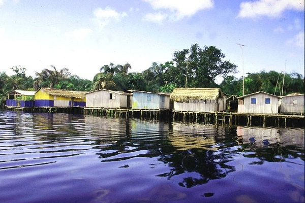

Nzulezo Floating Village

Location: Western Region (Lagoon City)
Nzulezo is one of the few remaining floating villages in West Africa. Built on a lagoon, this unique settlement has been inhabited for centuries and offers insights into traditional water-based living.
Unique Features:
- Entirely built on wooden stilts
- Accessible only by canoe
- Traditional fishing community
- Ancient architecture and construction methods
- Cultural immersion experiences
Best Time to Visit: November to March (dry season with lower water levels)
Kumasi - The Golden Stool

Location: Ashanti Region
Kumasi is the cultural capital of Ghana and home to the Asante people. The city boasts rich traditions, the famous Asante Kente cloth, the Manhyia Palace Museum, and the largest open-air market in West Africa.
Cultural Highlights:
- Manhyia Palace Museum
- Kumasi Central Market (largest in West Africa)
- Kente cloth weaving demonstrations
- Traditional Asante kingdom heritage
- Sacred groves and spiritual sites
Best Time to Visit: September (Adum Festival) or throughout the year
🤝 Cultural Experience Tips
Respect: Always ask permission before taking photographs of people and cultural events
Dress Code: Dress modestly, particularly in traditional villages
Local Guides: Hire local guides to better understand cultural practices and history
Support Local: Purchase crafts and goods directly from artisans and community members